Our acceleration structure involves an Octree that is performed over the global-bounding box (union of bounding boxes of all primitives in scene), with a threshold of 16 objects before and tree division is performed (e.x. an undivided node needs at least 16 primitives to divide).
Additionally, we also use an optimization that causes rays that miss the entire scene bounding box to simply render a black pixel (background)
Though this is not intended to be our acceleration structure, we also use
OpenMP (and a compiler directive
#pragma omp parallel for) to render the scenes faster,
parallelizing our raycast for loop.
Timings can be found below for scene7.test, measured using
std::chrono. Rendering was done on a Windows 11 machine with
a AMD Ryzen 5 3600 CPU and NVIDIA RTX 3070ti GPU (for OpenMP).
| Method | Scene 7 Rendering Time |
|
Without Acceleration Structure Without OpenMP Parallelization |
2723.158 seconds |
|
With Acceleration Structure Without OpenMP Parallelization |
80.060 seconds |
|
With Acceleration Structure With OpenMP Parallelization |
17.243 seconds |
| Scene File | Our output |
| scene4-ambient |
|
| scene4-diffuse | 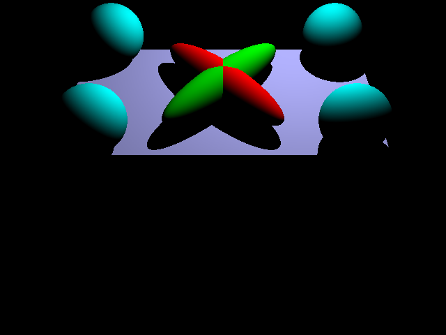 |
| scene4-emission | 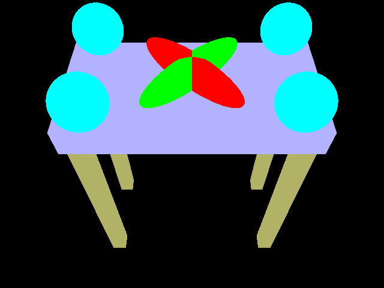 |
| scene4-specular | 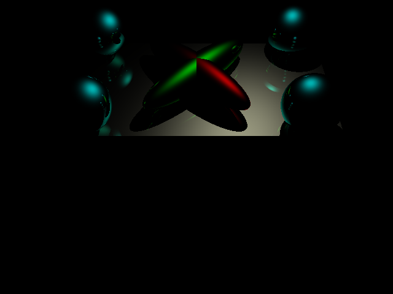 |
| Scene File | Our output |
| scene5 | 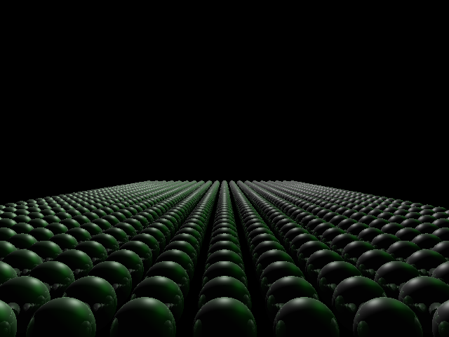 |
| scene6 | 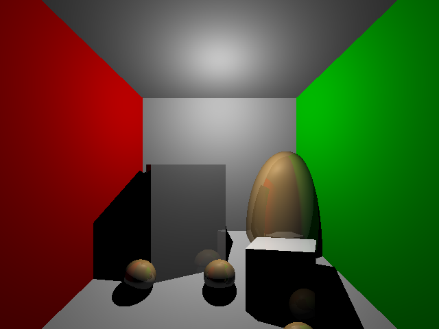 |
| scene7 | 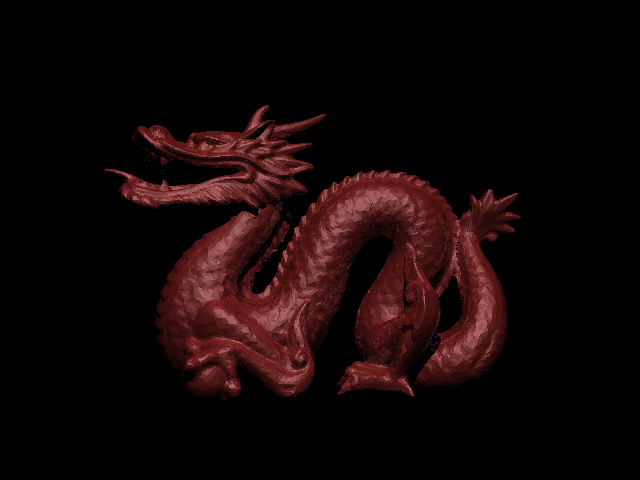 |
trinorm.test
We specified ways to insert triangles with normals, using both the specification in ucsd online (trinormal), as well as an alternative method that allows one to specify a different order to triangles/normals indexing. This interpolation is done by utilizing the barycentric coordinates of the hit point, and interpolating the normals the same amount.
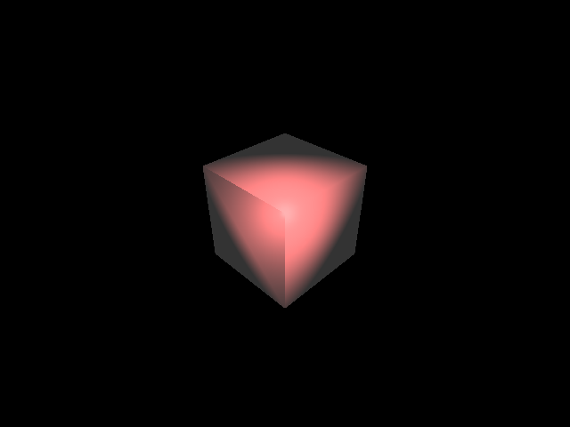We implemented texture mapping for ambient, emission, diffuse, specular, and normals. This is done by allowing the user to specify uv texture coordinates similar to vertices/normals, and textured-triangles can also be specified. We also implemented a command to load texture images. Only triangles can be textured.
The interpolation we use is not perspective-corrected, and only bilinear interpolation or nearest-neighbor interpolation is used. (no mip-mapping or averaging over texture)
Normal mapping was doing by generating a Tangent-Bitangent-Normal change of basis, following a guide produced by opengl. Link
|
Ambient + Emission texture-ambient.test
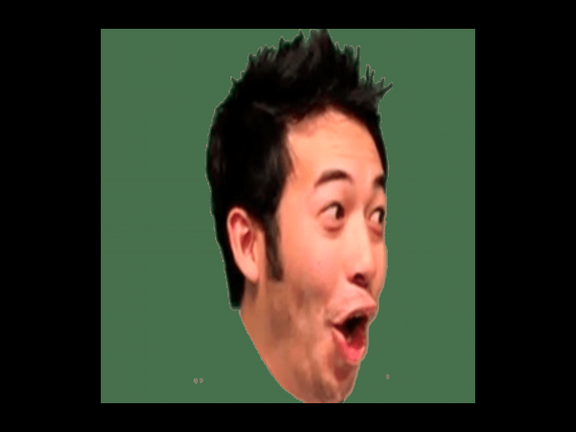 |
Diffuse texture-diffuse.test
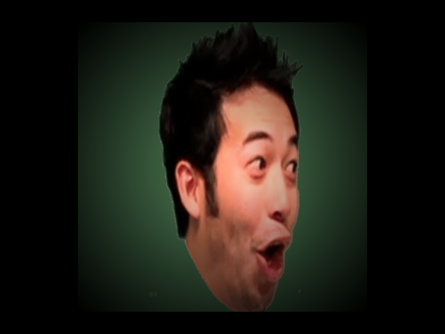 |
|
Specular texture-specular.test
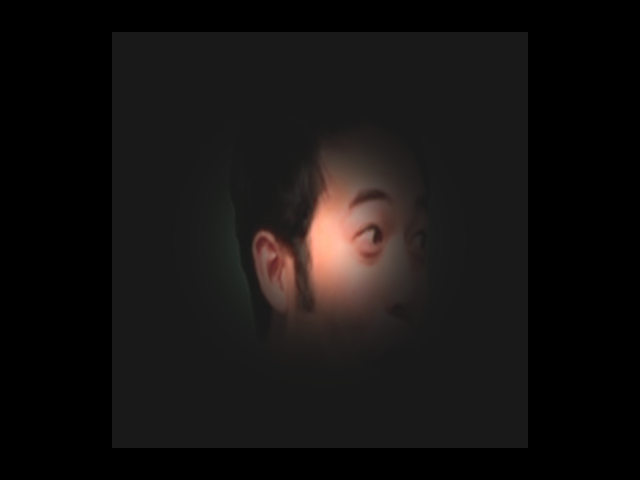 |
Normal texture-normal.test
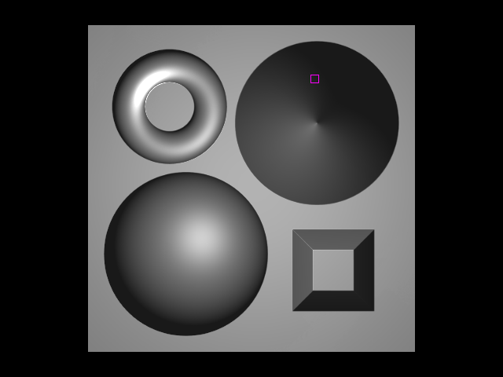 |
We also implemented an environment cube-map to obtain a background color that is sampled in case a ray misses all primitives. Our convention uses x-axis as forward, y-axis as left, and z-axis as up. (hard-coded)
struct cf { // cf = cube face
float bl_u; // texture bottom-left u value
float bl_v; // texture bottom-left v value
int dim_u; // the dimension correpsonding to positive u
(0, 1, 2)
int inc_u; // whether the dimension is positive or
negative
int dim_v; // same as dim_u but for v
int inc_v; // same as inc_u but for v
};
|
Cubemap (Wikipedia One)
|
Peaceful Cubemap
|
|
Hellfire
|
Mountain
|
In leveraging more optimized rendering times, the anti-aliasing process is implemented by iterating over a specified number of samples for each pixel. For each sample, the pixel coordinates are randomly offset by a value, producing slightly different views of the scene from each sample, which can help reduce the visual artifacts.
| No sampling | 16 samples | 64 samples |
|---|---|---|
| 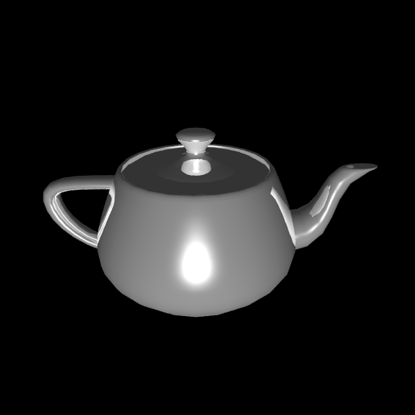 | ||
Area lights allow for more realistic illumination of the scene through defined u,v-vector offsets from the corner of the light (as inspired from The Ray Tracer Challenge). While point lights produce hard shadows, area lights allow for softer shadows through sampling of the offsets.
Below is a comparison of a point light and area light, defined as the following:
| Point Light | Area Light |
|---|---|
| 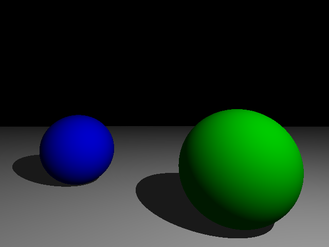 | 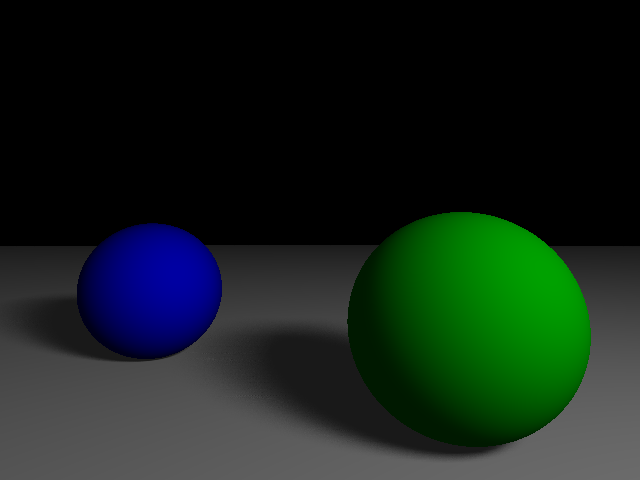 |
Material properties also include a transparency and refraction index, which allows for the simulation of refractive materials. Refraction is implemented by using Snell's Law to determine the direction of the refracted ray, and the Fresnel equations to determine the amount of reflection and refraction.
| refraction.test | scene7-refract.test |
|---|---|
| 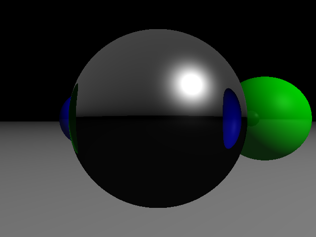 | 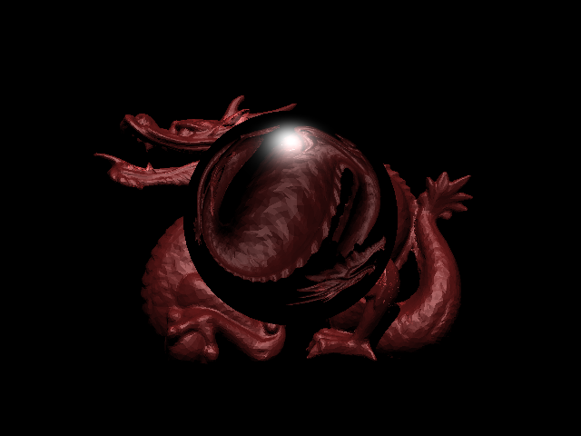 |